Lab 1 - DonationWebStorm (Express & Node Web App using WebStorm)
In this lab we're going to build a very simple Node Web App using the WebStorm IDE. If you haven't done so already, get it set up by following the WebStorm IDE Setup. This web app won't have much functionality but it will take you through the process of building a Node Web app using WebStorm.
Once completed and running, your Node Server Landing Page will be at localhost:3000)
Objectives
In this Lab, you will be required to build a simple Node/Express Web App (using WebStorm), called DonationWebStorm. We will use the WebStorm IDE to do most of the initial setup for us.
On completion of this lab you'll be able to
- create a skeleton NodeJS app using express
- run this app as a NodeJS Server
- customise the Node Server Landing (Home) Page
Step 2 - Project Setup
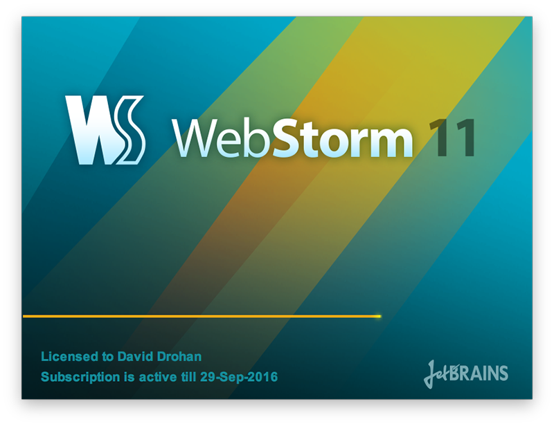
We're going to build our first Node/Express web app using WebStorm, so (assuming you already have it installed) launch your WebStorm IDE and create a new Node/Express Project as follows;
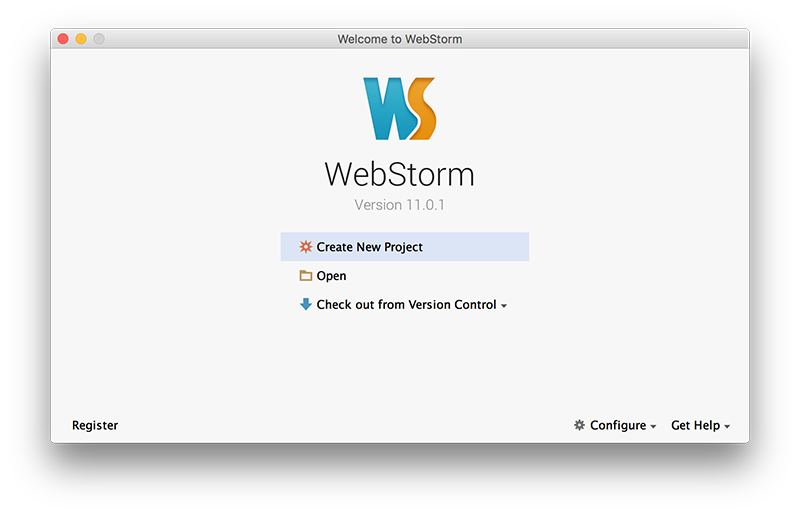
So select 'Create New Project' and you should get something like this
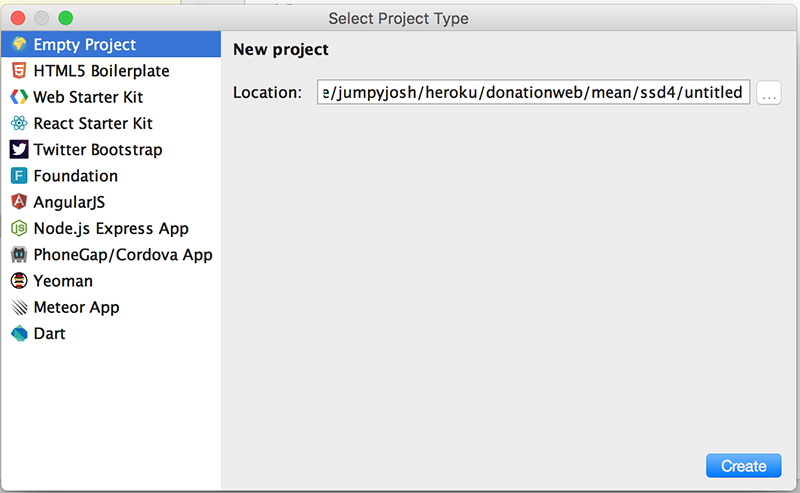
Select a 'Node.js Express App'

and browse to the location you want to store your project files. It's probably a good idea to store all your web apps in a single folder (ssd4 for me here) and create a new folder for our specific web app donationwebstorm (as below).

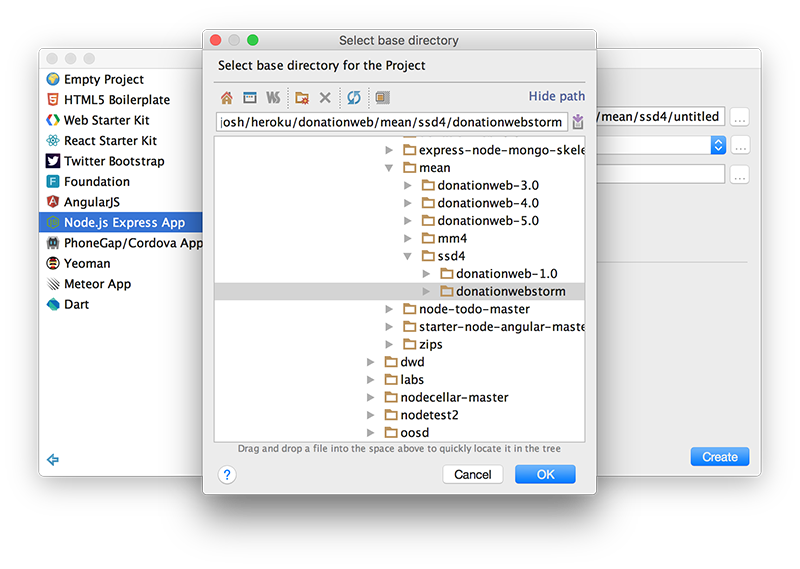
and make sue you choose EJS as the templating option (more on this later)
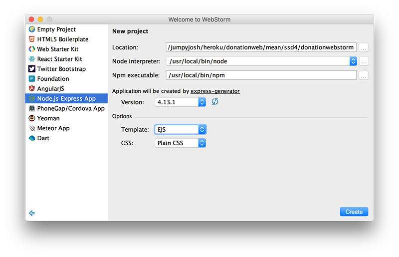
As you can see below, this will auto-generate a node web app, creating all the necessary folders and files we need to get started. EJS specifies we want to use the Embedded JavaScript Templates (instead of the default which is Jade).
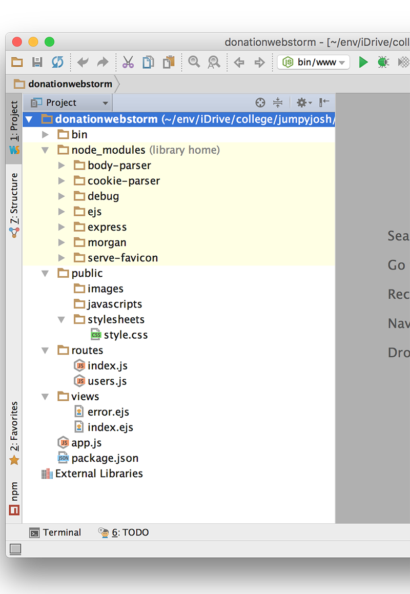
Now, click on the 'play' button to run/launch your Web App..
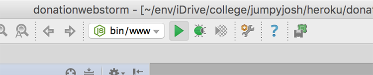
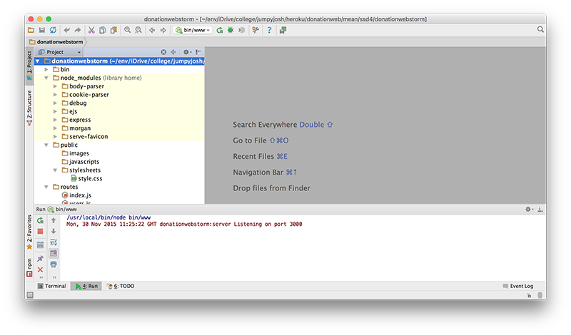
If everything goes to plan you should be able to visit http://localhost:3000 in your browser, and see the following
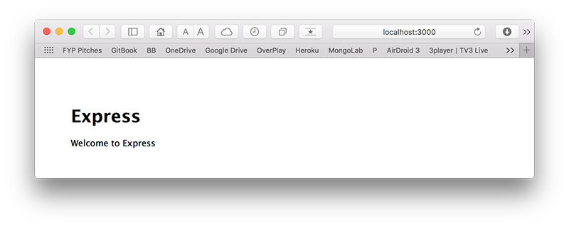
Now, if you'd rather your browser launch automatically you can configure you 'Run' options like so
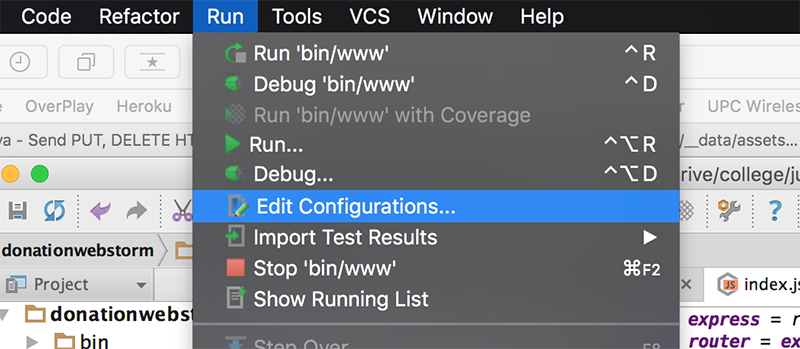
and choose the Browser you prefer
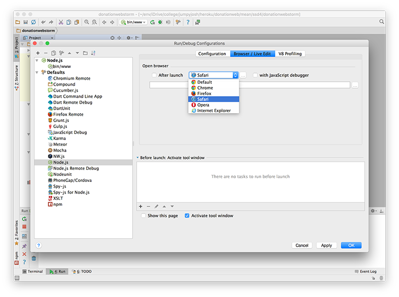
Just be sure to 'tick' the 'After Launch' check box
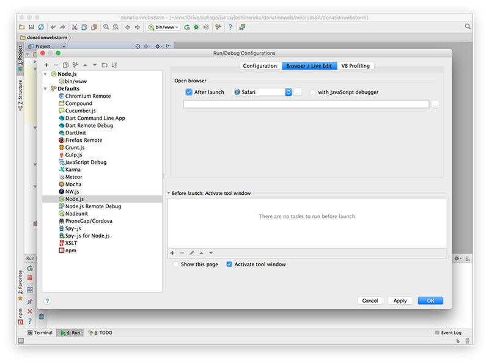
Close the browser tab/window and run your app again, to confirm your new run configuration is correct.
The next step will involve customising our home page (although customising is a bit of a stretch!)
Step 3 - Customising our Home Page
Before we make a start launch your app again and confirm that it automatically launches your preferred browser as well
Now, navigate to you 'routes' folder
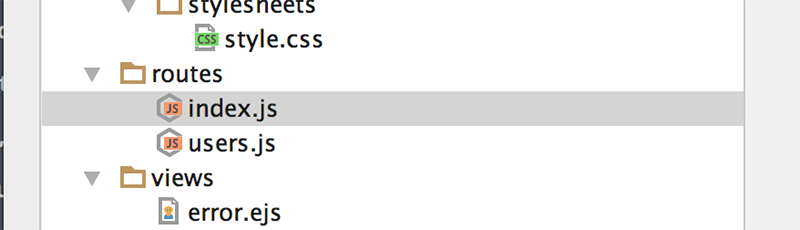
Open up the index.js file, and replace the default title value with this one
'DonationWebStorm Web App'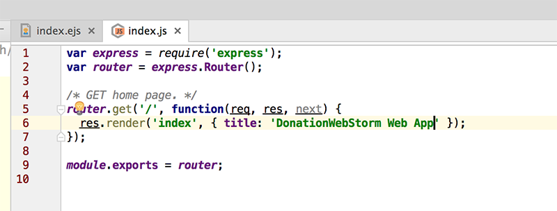
Launch your app again and your project should now look something like this
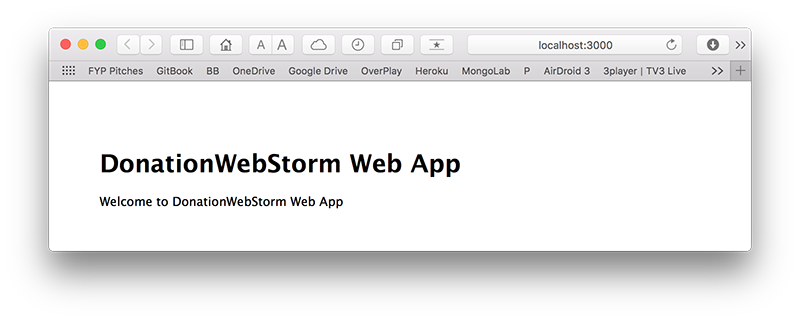
Well Done!! - You've just created, customised and deployed your first Node Web App.